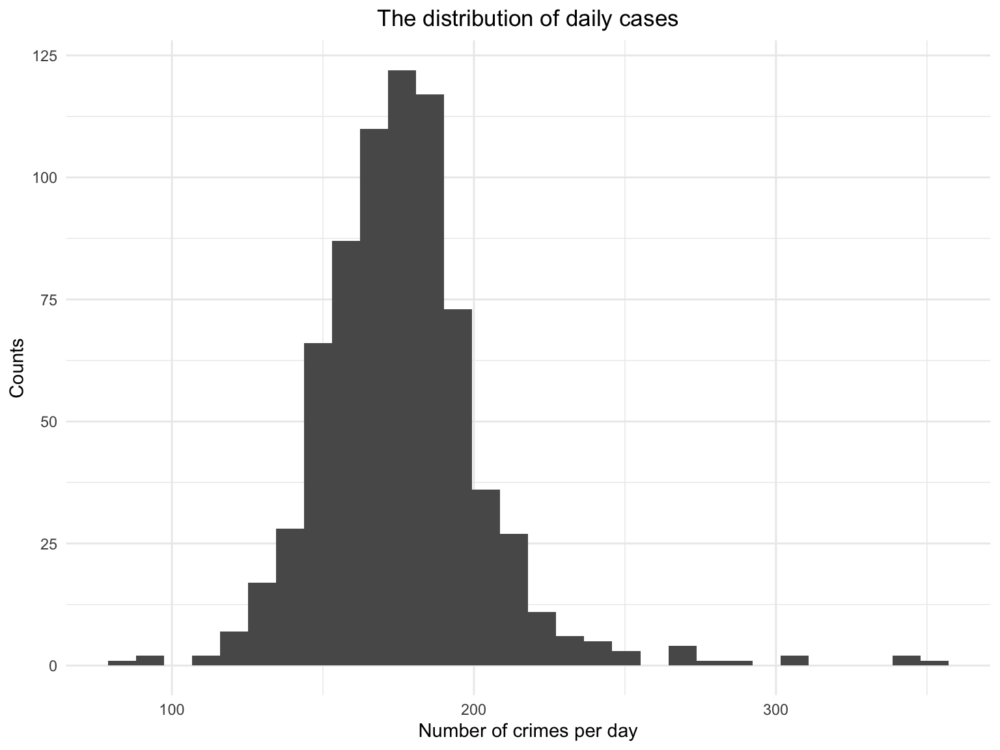
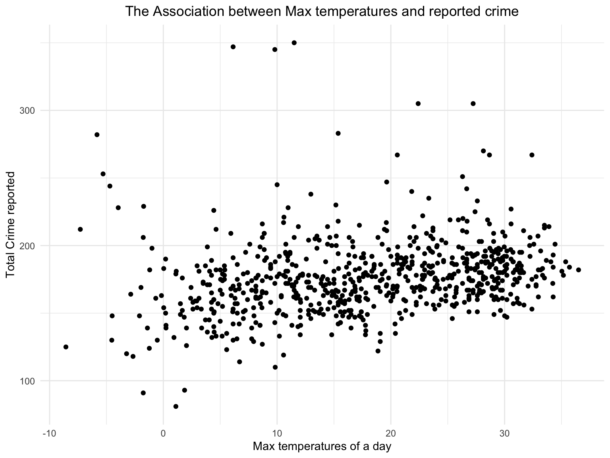
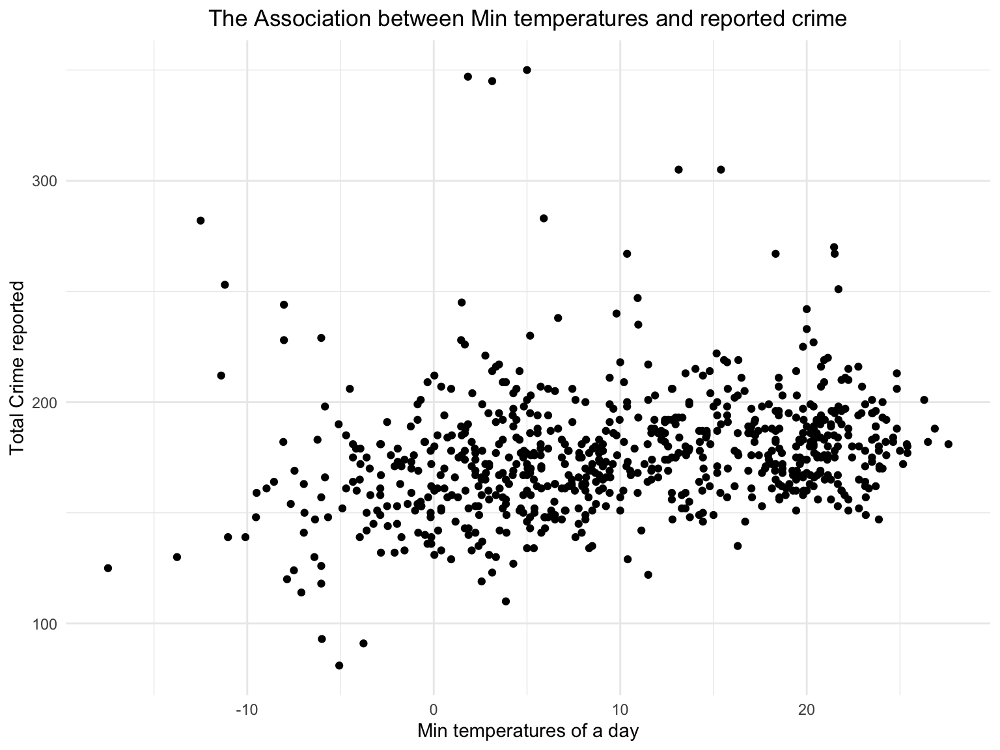
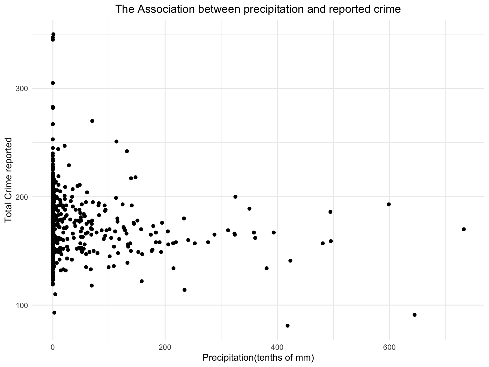
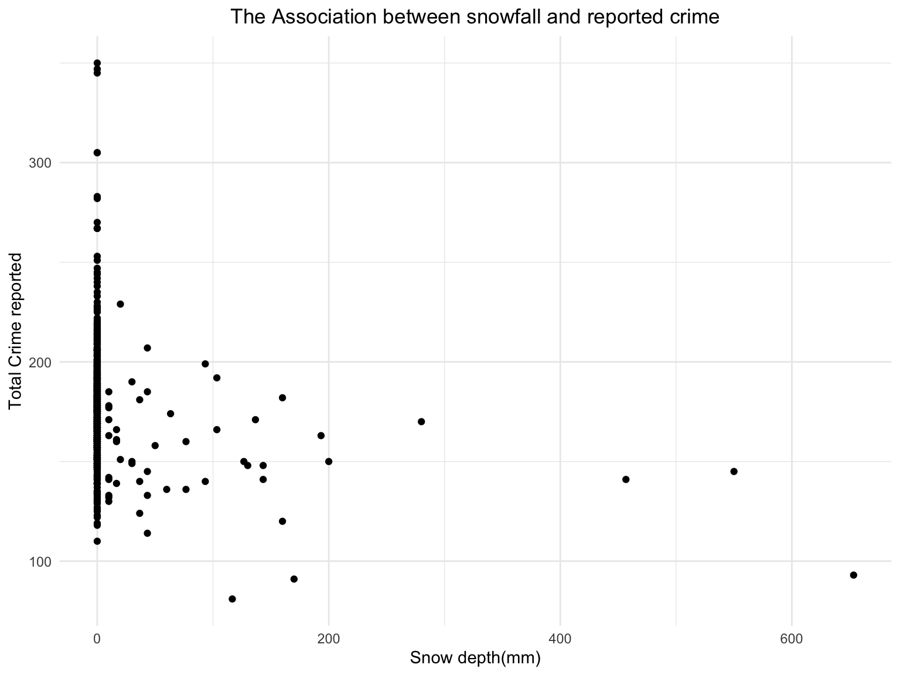

Based on the Lombroso’s Theory of Crime, natural climatic factors can influence crime rates. The Extreme temperatures sap one’s energy and reduce the passion for crime. The suitable temperatures stimulate one’s nerve like alcohol and makes it easier to commit criminal acts in an excited situation.
In fact, the weather in criminology covers many aspects. Apart from the weather itself, it also involves the seasons as well as the temperature. All of these natural events occur in the spatial and temporal dimensions and recur with regularity from year to year constitutes a season. In order to fully discuss the changes of crime rates in the time dimension, we also consider the changes in crime rates at different times of the day and on different days of the week.
In Our project, there are two datasets, including NYPD Complaint Data Historic and weather data. We obtained crime data in New York City from NYC Open Data * Crime data of New York City is downloaded from the link below : NYPD Complaint Data Historic.
This dataset contains 780 million felony, misdemeanor, and violation crimes reported to the New York City Police Department (NYPD) from 1910 to 2021. Each record contains detailed information of a single crime reported to NYPD. In our project, we select the records from 2016-01-01 to 2017-12-31 to do analysis and modeling.
For further analysis, we converted the original dataset to make it more readable and selected some key variables:
date. Date the crime occurs.hour_of_day. Occurring time of the crimesborough. Borough the crime occurs.level. Level of offense: felony, misdemeanor,
violation.offense. Description of offense.offense_classification. Description of internal
classification of offense.place. Specific description of premises; grocery store,
residence,street, etc.suspect_age. Suspect’s Age Group.suspect_race. Suspect’s Race Description.suspect_sex. Suspect’s Sex Description.victim_age. Victim’s Age Group.victim_race. Victim’s Race Description.victim_sex. Victim’s Sex Description.day_of_week. Day of week that a crime occurs.mon. Months in a year that a crime occurs.latitude. Latitude of the place the crime occurs.longitude. Longitude of the place the crime
occurs.Considering that weather may be a reason of committing crime, we used data from three weather stations in New York and calculate the mean weather parameters to represent the weather of New York.
Weather data is obtained from website of NOAA
The key variables of weather are:
mean_snow. snow depth(mm).mean_prcp. precipitation(tenths of mm)mean_tmin. minimum temperature of a daymean_tmax. maximum temperature of a dayBased on some publicly available information, we knew that weather affect crime rate. For example, the hotter the weather is, the more likely people are to commit crimes. The worse the weather is, the less likely people are to go out and commit crimes. Here we want to predict number of crimes each day in New York as our outcome. And the precipitation, snow depth, maximum temperature and minimum temperature can be considered as predictors.
We checked the distribution of number of crime cases each day in New York.
ggplot(data = crime_weather,aes(x = total_crime)) + geom_histogram()+
labs(title = "The distribution of daily cases",
y = "Counts",
x = "Number of crimes per day")+
theme(plot.title = element_text(hjust = 0.5))
The distribution of daily cases is approximately normally distributed, thus we do not need to transform the value of the outcome.
Then, we use scatter plot to investigate the association between weather and cases/crime.
ggplot(crime_weather, aes(x = mean_tmax, y = total_crime)) + geom_point()+ labs(title = "The Association between Max temperatures and reported crime",
y = "Total Crime reported",
x = "Max temperatures of a day")+
theme(plot.title = element_text(hjust = 0.5))
ggplot(crime_weather, aes(x = mean_tmin, y = total_crime)) + geom_point()+ labs(title = "The Association between Min temperatures and reported crime",
y = "Total Crime reported",
x = "Min temperatures of a day")+
theme(plot.title = element_text(hjust = 0.5))
ggplot(crime_weather, aes(x = mean_prcp, y = total_crime)) + geom_point()+ labs(title = "The Association between precipitation and reported crime",
y = "Total Crime reported",
x = "Precipitation(tenths of mm)")+
theme(plot.title = element_text(hjust = 0.5))
ggplot(crime_weather, aes(x = mean_snow, y = total_crime)) + geom_point()+ labs(title = "The Association between snowfall and reported crime",
y = "Total Crime reported",
x = "Snow depth(mm)")+
theme(plot.title = element_text(hjust = 0.5))
From the plots, we noticed that all of the four predictors may have association with the number of cases of crime in New York. We also want to investigate whether the month and day of week can be predictors. (Beginning of EDA)
We want to explore more on our data. So we conducted some statistical test. First, we conducted a Chi-squared test on year and number of cases each month to check whether the distribution of number of cases per month is different between the two years. The result shows that there is a significant difference of distribution between the two years.
And then we want to investigate whether weather is a significant factor on number of crime cases. We combine the two dataset and create a categorical variable according to the weather parameters each day and devided them into four types: “rainy and snowy”, “snowy”, “rainy”, “not rainy or snowy”. After that, we conducted a ANOVA test between number of crimes per day and weather. From the result, we came to conclude that the the average number of crimes per day is significantly different in different weather.
We also conducted a Chi-squared test on number of different types of crimes and weather. We learned from the result that there is not a homogeneity in the types of crimes for each type of weather. So we conclude that weather may also has an association with the type of crimes.
We already know that weather may influence crimes from previous analysis. So we decided to build a model to predict daily crimes cases. We proposed following models:
We use cross validation to compare the four models and performed a diagnostics and we concluded that Model3 is the best and it meet the model assumptions. We should select month, day of week, maximum temperature, precipitation, snow depth and a interaction term between temperature as our predictors.